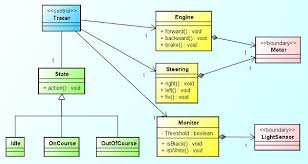

Introducción académica
El Lenguaje Unificado de Modelado (UML) es un estándar para especificar, visualizar, construir y documentar sistemas orientados a objetos. UML permite representar distintos puntos de vista del sistema y facilita la comunicación entre analistas, arquitectos y desarrolladores.
Contexto en Ingeniería de Software
- Formalizar requisitos mediante casos de uso.
- Diseñar la arquitectura mediante diagramas de componentes y despliegue.
- Modelar el comportamiento con diagramas de secuencia y actividad.
- Servir como base para la trazabilidad entre requisitos, diseño y pruebas.